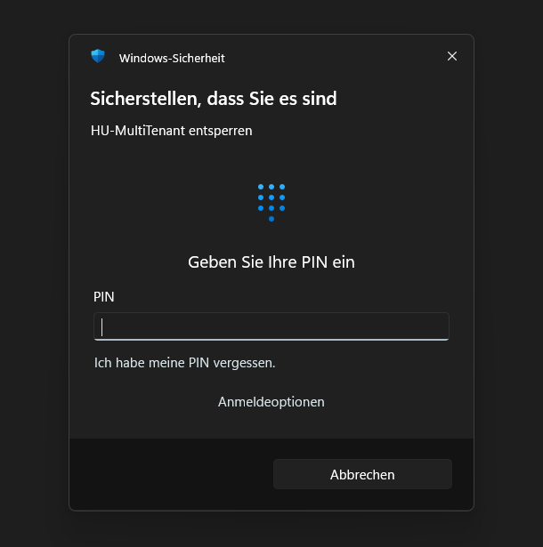

![]()
HU-MultiTenant
Microsoft 365 und Intune für mehrere Tenants aus einer Oberfläche: PowerShell im Tenant-Kontext mit eigener Snippet-Bibliothek, fertige Reports als Extensions, App-Verteilung, Wartungsskripte und das Ablaufdatum der Client Secrets im Blick.
1Einrichten
INSTALL.md im Programmordner.Tenant anlegen
- ⚙ Einstellungen › Reiter Tenants › + Neu
- Anzeigename, Schlüssel (kurz, eindeutig, z. B.
Tenant-1– so heißt der Tenant in Skripten als$TenantKey), Tenant-ID, Anwendungs-ID, Domäne. - 🔐 Secret eingeben … – Wert einfügen. Gespeichert DPAPI-verschlüsselt in
%APPDATA%\HU-MultiTenant\, nur für deinen Windows-Benutzer auf diesem PC lesbar. - Verbindung + Secret prüfen – zeigt Anmeldung, Anzahl Berechtigungen und das Ablaufdatum.
- Speichern
| Feld | Bedeutung |
|---|---|
| AD-Schema | VirtualSchool: Rolle = jobTitle, Klasse = department · iPack: Rolle = faxNumber, Klasse = officeLocation (für Benutzer-Reports) |
| Secret gültig bis | nur nötig, wenn die App kein Application.Read.All hat |
| Geschützte App-IDs | Apps, die schreibende Extensions (z. B. Enterprise-App-Inventur) nie anfassen. Die eigenen App-IDs aller Tenants sind immer geschützt. |
| Standard-Tenant | wird beim allerersten Start vorgewählt |
| Secret dauerhaft speichern | aus: das Secret wird beim Beenden gelöscht (geteilte PCs) |
⚙ Einstellungen › Allgemein › Autor (Apps und Wartung): steht in Intune bei hochgeladenen Apps als Besitzer und bei Wartungsskripten als Herausgeber (leer: Wartung mit „HU-MultiTenant“). Gilt ab dem nächsten Hochladen.
Sperre
Warum? Mit HU-MultiTenant hat man Zugriff auf mehrere Tenants gleichzeitig – entsprechend groß ist die Verantwortung. Sperre und Not-Aus sind eine zusätzliche Sicherheitsebene: Sie sollen verhindern, dass jemand am unbeaufsichtigten PC in wenigen Sekunden etwas in allen Tenants verändert, und erlauben bei Verdacht auf Schadsoftware, die gespeicherten Zugänge sofort zu entfernen.
⚙ Einstellungen › Allgemein › Sperre: zuerst PIN festlegen …, dann sperren nach … Minuten ohne Eingabe in HU-MultiTenant und auf Wunsch auch beim Start. Entsperrt wird mit Windows Hello (Gesicht, Fingerabdruck, Windows-PIN) oder der PIN; Strg+L sperrt sofort. Laufende Aufträge laufen im Hintergrund weiter. Das ist ein Schutz gegen schnelles Mitbenutzen am offenen PC – der eigentliche Schutz bleibt die Windows-Sperre. PIN vergessen und kein Hello: in Config\settings.json "lockEnabled": false setzen.


Not-Aus (⛔ oben rechts): bei Verdacht auf Schadsoftware nach Rückfrage alle auf diesem PC gespeicherten Secrets löschen und HU-MultiTenant beenden. Danach öffnen sich die App-Registrierungen der Tenants – dort die Secrets widerrufen, denn bereits kopierte Secrets bleiben sonst gültig. Anschließend neue Secrets anlegen und in den Einstellungen eintragen.
Verknüpfung
⚙ Einstellungen › Allgemein › Desktop-Verknüpfung oder Startmenü-Eintrag. Dabei entsteht HU-MultiTenant.exe im Programmordner: eigenes Logo, kein Konsolenfenster, an die Taskleiste anheftbar. Ohne Administratorrechte.
2Oberfläche
| Bereich | Inhalt |
|---|---|
| Titelleiste | Version, Warnung bei bald ablaufenden Secrets (Klick öffnet die Tenants), 🛠 Berechtigungen, ⚙ Einstellungen, 🛟 Support (Protokolle anonymisiert als ZIP, per E-Mail oder GitHub-Issue), ? Anleitung, Update |
| Tenant-Leiste | nur im Reiter Extensions: Tenant für die Extensions, Status (● grün = verbunden, gelb = Berechtigungen fehlen, rot = Fehler), Secret-Ablauf, Verbinden / Trennen |
| links | Extensions mit Suche, ↻ lädt neu (eigene Extensions ohne Neustart) – in Apps und Wartung ausgeblendet; ein Klick auf eine Extension wechselt zum Reiter Extensions |
| rechts | Reiter ⚡ Quick Script (Start-Reiter), 🧩 Extensions, 📦 Apps und 🛠 Wartung |
3Quick Script
Eigene PowerShell-Skripte direkt gegen einen Tenant – in einem eigenen Runspace, die Oberfläche bleibt bedienbar.
- Tenant oben im Reiter wählen (eigene Auswahl, unabhängig von den Extensions).
- Snippet wählen oder Skript in den Editor schreiben.
- Strg+Enter – verbindet bei Bedarf automatisch und führt aus. Ausgabe erscheint Zeile für Zeile, Esc bricht ab. Alle Tasten: Tastenkürzel.
Eigene Snippets schreiben
Im Skript stehen $Token, $TenantKey und die Graph-Funktionen schon bereit. Alles zum Schreiben – Funktionen, Regeln, Parameter, Vorlagen – steht in SNIPPET-DEVELOPMENT.md im Programmordner (online: GitHub).
Mehrere Tenants
Mehrere ▾ öffnet eine Liste mit Haken. Ab zwei Haken läuft das Skript nacheinander je Tenant – $Token und $TenantKey gelten jeweils für den laufenden Tenant. Ausgegebene Objekte bekommen die Spalte Tenant, ein Fehler bricht nur diesen Tenant ab. Keine schaltet zurück auf die Einzelauswahl.
Parameter
Enthält ein Snippet Zeilen wie # @param Tage|int|Ohne Sync seit Tagen|30, erscheinen über dem Editor Eingabefelder. Die Werte bleiben je Snippet gemerkt, solange das Programm läuft.
DryRun, WhatIf, Probelauf o. ä. aus, fragt das Tool vor dem Start nach. Setzt der Code die Variable selbst ($DryRun = …), wirkt das Feld nicht – das steht dann in der Ausgabe.Tabelle und Export
Gibt das Skript Objekte aus ([pscustomobject], Select-Object), wird 📊 Tabelle aktiv: Filter über alle Spalten, CSV … (Semikolon, UTF-8), Excel … (benötigt das Modul ImportExcel) und Kopieren für Excel.
Verlauf
🕒 Verlauf zeigt alle Läufe mit Zeit, Snippet, Tenants, Dauer und Ergebnis. Doppelklick öffnet das komplette Protokoll (Logs\QuickScript\, aufbewahrt wie das Tagesprotokoll, Standard 30 Tage).
Write-Host -ForegroundColor erscheint farbig, Write-Warning orange, Fehler rot mit Zeilennummer. Ausgabe kopieren legt die ganze Ausgabe in die Zwischenablage. Rechtsklick in die Ausgabe (auch im Protokoll der Extensions): Kopieren, Alles kopieren, Ausgabe leeren.
4Snippets
Die Auswahl oben im Reiter lädt ein Snippet sofort. Darunter stehen Name und Kurzbeschreibung; ein oranger Punkt ● bedeutet ungespeicherte Änderungen – beim Wechseln und Beenden fragt das Tool nach.
| Knopf | Wirkung |
|---|---|
| Neu | leerer Editor |
| 💾 Speichern | aktuelles Snippet überschreiben (neues: Name + Beschreibung) |
| Speichern unter … | als neues Snippet mit eigenem Namen und Beschreibung |
| 📚 Verwalten … | Bibliothek im eigenen Fenster |
Verwalten
- Favoriten: auf den Stern ☆ in der Zeile klicken (oder ★ Favorit für alle markierten). Favoriten stehen in der Auswahl im Quick Script ganz oben; nur Favoriten filtert die Liste. Im Quick Script schaltet der Stern vor dem Namen das geladene Snippet um.
- Suche in Name, Beschreibung und Code
- Eintrag markieren → Name / Kurzbeschreibung ändern → Änderung übernehmen; rechts die Code-Vorschau
- ▲ ▼ Reihenfolge, A-Z, Neueste zuerst, Duplizieren, 🗑 Löschen (mehrere mit Strg/Umschalt)
- Exportieren … markierte (oder alle) als JSON, Importieren … fügt hinzu – gleiche Namen: ersetzen oder als Kopie
- Kategorien: Feld Kategorie (oder vorhandene wählen) → übernehmen, gilt für alle markierten. Die Liste ist nach Kategorien gruppiert und filterbar.
- Beispiele lädt 12 fertige Snippets (Kategorie Beispiele) – vorhandene gleichen Namens bleiben unangetastet.
- Verlauf zeigt die Läufe des markierten Snippets; darunter steht Zuletzt ausgeführt.
- Doppelklick oder ▶ Im Editor öffnen lädt das Snippet
5Extensions
- Tenant in der Tenant-Leiste wählen.
- Extension links wählen – rechts stehen Beschreibung, benötigte Berechtigungen und Parameter.
- Optional DRY-RUN (nur Vorschau, bei Extensions, die das unterstützen).
- ▶ STARTEN – läuft im Hintergrund, Fortschritt im Protokoll. Reports landen in
Reports\HU-Reports_JJJJ-MM-TT\(Knopf Reports).
Kennzeichen in der Liste: DRY-RUN = Vorschau möglich, BATCH = für mehrere Tenants geeignet, SCHREIBT = verändert den Tenant (vor dem Start zusätzliche Rückfrage).
Berechtigungen
🛠 Berechtigungen zeigt je Tenant, welche Graph-Anwendungsberechtigungen erteilt sind – mit Risiko, Beschreibung und welche Extension sie nutzt. Ist eine Extension gewählt, steht oben, ob ihre Berechtigungen vorhanden sind. Alle Tenants vergleichen zeigt alles in einer Tabelle. Verbinden ist dafür nicht nötig. Nach einer Änderung in Entra (Administratorzustimmung) ↻ Neu lesen.
Eigene Extensions
Vorlage Extensions\Template.ps1 kopieren, Kopf ausfüllen (.REQUIRED_PERMISSIONS, .PARAM, .DRY_RUN_CAPABLE, .MODE, .RUNTIME) und ↻ drücken. Details: EXTENSION-DEVELOPMENT.md. Eigene Extensions bleiben bei Updates erhalten.
6Apps verteilen
Programme (MSI, EXE) und Microsoft-Store-Apps an einen oder mehrere Tenants verteilen. Oben links umschalten: Bibliothek (eigene Apps, die HU-MultiTenant paketiert und hochlädt) oder In Intune (alle vorhandenen Apps verwalten).
- + MSI / EXE … oder die Setup-Datei auf die Liste ziehen. Name, Version, Hersteller, Befehle und Erkennung werden ausgelesen – bei MSI vollständig, bei EXE mit stillem Schalter (Inno, NSIS, InstallShield, WiX, Advanced Installer, Squirrel).
- Kategorien (Unternehmensportal): mit Komma getrennt eintragen oder Auswahl … – lädt die Kategorien der angehakten Tenants. Neue Kategorien legst Du in der Auswahl unter Neue Kategorie › Anlegen … an (mit Rückfrage, auch um eine vorhandene in fehlenden Tenants zu ergänzen; im Intune-Portal erst nach Neuladen der Seite sichtbar) und mit Löschen … oder Rechtsklick auf eine Kategorie wieder löschen. Fehlt eine Kategorie beim Hochladen in einem Tenant, wird sie dort übersprungen und gemeldet; leer = in Intune nichts ändern.
- Testinstallation in der Windows Sandbox – schlägt Erkennung, Deinstallation und Symbol vor (siehe unten).
- Tenants anhaken, Ziel wählen – Gruppe (🔍 sucht in den angehakten Tenants und zeigt, wo eine fehlt), Alle Geräte, Alle Benutzer oder Keine Zuweisung – dazu Erforderlich, Verfügbar (Unternehmensportal) oder Deinstallieren, optional Frist und Hinweise.
- ⬆ Hochladen & zuweisen – das Paket wird einmal gebaut und in jeden Tenant hochgeladen; die Geräte holen die App beim nächsten Sync.
- 📊 Status – je Gerät Installiert / Fehlgeschlagen / Nicht installiert mit Fehlertext und Export (der Intune-Bericht braucht nach dem Zuweisen oft 1–2 Stunden).
Testinstallation (Windows Sandbox)
Das Setup läuft in einem Wegwerf-Windows, dein PC bleibt sauber. Danach: Vorschlag übernehmen? (Erkennung, Deinstallationsbefehl, Symbol). Deinstallation mittesten prüft auch das Entfernen. Der Test meldet Fenster, die unter Intune hängen würden, Desktop-Verknüpfungen und Installationen nur ins Benutzerprofil; bei Fehlern stehen die Protokolle gleich in der Ausgabe. Stille Schalter werden automatisch ergänzt (Inno: /ALLUSERS beim Installieren, /VERYSILENT und Beenden der laufenden App beim Deinstallieren). Die Sandbox schließt sich danach selbst (Sandbox offen lassen zum Nachsehen).
Ist die Sandbox nicht aktiviert, öffnet sich ein Fenster mit Sandbox jetzt aktivieren (Administratorrechte, Neustart). Voraussetzung: Windows 10/11 Pro, Education oder Enterprise mit Virtualisierung; es läuft immer nur eine Sandbox.
Neue Version
Neue Setup-Datei auf die Liste ziehen (oder in der App Andere Datei …) und Ja wählen: dieselbe Intune-App wird aktualisiert, Zuweisungen bleiben. Versionsnummern im Namen werden dabei ignoriert; neue Apps bekommen einen Namen ohne Version vorgeschlagen. Bei EXE-Setups mit Registry-Erkennung die Versionsprüfung einschalten – sonst gilt die alte Version auf den Geräten als „installiert“.
Updates (winget)
Ansicht Updates (neben Bibliothek und In Intune): vergleicht die Setup-Apps der Bibliothek mit dem winget-Repository. Braucht winget auf deinem PC (App-Installer aus dem Microsoft Store; ist das Modul Microsoft.WinGet.Client installiert, wird es bevorzugt). Quelle: Einstellungen › Allgemein › Quelle für App-Updates – Standard winget (Community-Repository), sonst jede auf deinem PC eingerichtete Quelle (winget source list, z. B. eine eigene REST-Quelle).
- ↻ Nach Updates suchen – je App einige Sekunden. Apps ohne winget-ID bekommen sie automatisch, wenn genau ein Paket gleich heißt (orange Meldung – bitte prüfen); sonst winget-ID zuordnen … (oder Doppelklick): Treffer anklicken oder ID eintragen.
- Spalten: Version in der Bibliothek, neueste bei winget, Status (Update verfügbar, aktuell, Intune noch alt) und Stand je Tenant.
- ⬇ Neue Version holen: lädt den Installer (x64, maschinenweit, bei MSI-Apps bevorzugt MSI) nach
Downloads\HU-App-Updates\App\Versionund übernimmt ihn als neue Version der App – wie „Andere Datei …“. Eigene Installationsschalter einer EXE bleiben; fehlen welche, kommen sie aus dem winget-Manifest. Hochgeladen wird noch nichts. - Weiter in der Bibliothek: Installationsbefehl prüfen → Testinstallation in der Sandbox → Hochladen mit Pilotgruppe → später freigeben.
Abhängigkeiten (Treiber, Laufzeitumgebungen)
Unter Abhängigkeiten: + Bibliothek … (eigene App, wird mit hochgeladen, auch mehrstufig) oder + Intune … (schon vorhandene Win32-App, je Tenant per Name verknüpft). Mit automatisch mitinstallieren installiert Intune sie vor der App. Store-Apps können keine Abhängigkeit sein.
Weitere Optionen
| Option | Wirkung |
|---|---|
| Symbol … | Bild, ICO oder EXE für das Unternehmensportal (PNG, max. 256 px). Automatisch aus Setup, Testinstallation oder Microsoft Store. |
| Ohne Desktop-Verknüpfung | ins Paket kommt HU-Install.ps1, das nach dem Setup neue Desktop-Verknüpfungen entfernt – funktioniert bei jedem Setup. |
| Pilotgruppe | die App geht zuerst nur an diese Gruppe; Für alle freigeben ergänzt danach das eigentliche Ziel. |
| Store-App | + Store-App, Adresse von apps.microsoft.com oder nur die ID (z. B. 9NKSQGP7F2NH) einfügen – kein Paket nötig, aktualisiert sich selbst. |
In Intune (vorhandene Apps)
Zeigt alle Windows-Apps der angehakten Tenants, auch von Hand angelegte. Gleiche Namen werden über die Tenants zusammengefasst; die Liste zeigt „alle 2“, „nur: …“ oder „fehlt: …“ (Maus darüber: alle Tenants), alle hakt alle Tenants an bzw. ab. Oben rechts steht je Tenant der Installationsstand (installiert, fehlgeschlagen, ausstehend – wie im Portal). Jede Änderung gilt für alle Tenants, in denen es die App gibt:
- Zuweisungen ergänzen (gleiche Gruppe = ersetzen, auch Ausschluss) oder markierte entfernen
- Abhängigkeiten und Ersetzungen (Win32), inkl. „Benötigt von“ / „Ersetzt durch“
- Eigenschaften: Name, Hersteller, Beschreibung, Symbol, Kategorien (Auswahl …; unterschiedliche Kategorien je Tenant werden darunter angezeigt)
- 📊 Status, Im Portal öffnen, Löschen … – bei mehreren Tenants per Haken wählen, in welchen; danach doppelte Rückfrage
Tools\.DeviceManagementApps.ReadWrite.All und Group.Read.All.7Wartung (Remediations)
Wartungspakete prüfen regelmäßig etwas auf den Geräten und reparieren es bei Bedarf – z. B. volle Festplatte, abgeschalteter Dienst. Ein Paket besteht aus Prüfskript (exit 1 = Problem) und optional Reparaturskript; ohne Reparatur wird nur berichtet. Oben links: Bibliothek oder In Intune.
- + Neu oder Beispiele … (fünf fertige Pakete).
- Mit KI erstellen: Aufgabe in einem Satz → Prompt kopieren → in ChatGPT, Claude oder Copilot einfügen → Antwort kopieren → Antwort einfügen (wird in Prüf- und Reparaturskript aufgeteilt). Der Prompt bittet die KI, änderbare Werte gleich als Felder (
# @param) anzulegen. - ✔ Prüfen findet typische Fehler (fehlendes
exit 1, Neustart, Eingaben, PowerShell-7-Syntax, Benutzerpfade unter SYSTEM, Secrets im Klartext). Prüfskript hier ausführen testet das Prüfskript auf deinem PC. - 🧪 In Sandbox testen (auch unter In Intune): läuft in der Windows Sandbox wie bei Intune ab – als SYSTEM bzw. Benutzer, 64- oder 32-Bit, ohne Netzwerk: Prüfskript → bei
exit 1Reparatur → Prüfskript erneut. Die Ausgabe zeigt je Schritt Exit-Code, Dauer, Konto und Text (Warnung über 2.048 Zeichen) und das Ergebnis, wie Intune es melden würde. Die Sandbox ist ein frisches Windows: Software, die das Skript sucht oder entfernt, ist dort meist nicht installiert – geprüft werden Ablauf, Exit-Codes, Ausgabe und Rechte. Mit Sandbox offen lassen lassen sich dort weitere Fälle nachstellen (z. B. Benutzer deaktivieren) und der Test mit& C:\HUTest\HURemTest.ps1erneut starten. - Felder statt Werte im Code: eine Zeile
# @param Name|Typ|Beschriftung|Standardam Skriptanfang (Typenstring,int,bool,choicewie im Quick Script) wird zu einem Eingabefeld über den Skripten. Der Wert steht direkt darunter im Skript ($Name = 'Wert' # @value) – Intune kennt keine Parameter, hochgeladen wird genau das, was im Editor steht; ein Feld gilt für Prüf- und Reparaturskript. Dadurch funktioniert es auch unter In Intune: Wert ändern → Änderungen speichern. Werte als Felder übernehmen macht aus einfachen Zuweisungen am Skriptanfang ($PwPlain = '…') solche Felder. Nicht zusammen mit einemparam()-Block verwenden. - Tenants, Ziel, Zeitplan (täglich, stündlich, einmal) und Kontext → ⬆ Hochladen & zuweisen (optional Pilotgruppe wie bei Apps).
- 📊 Ergebnisse: je Gerät kein Problem / Problem / behoben / Fehler mit Skript-Ausgabe und Export. ▶ Jetzt auf Gerät … startet das Paket sofort (Gerät muss online sein).
In Intune (vorhandene Wartungsskripte)
Wie bei den Apps: alle Skripte der angehakten Tenants, auch die von Microsoft (nur lesen und zuweisen), nach Namen zusammengefasst; Filter Nicht überall zeigt Skripte, die in einem Tenant fehlen. Rechts stehen Zusammenfassung (ohne Problem, Problem, behoben, Fehler), Zuweisungen mit Zeitplan und „mit Reparatur“ sowie Skripte und Eigenschaften.
- Skripte ändern: werden vor dem Speichern geprüft. Unterscheiden sich die Skripte zwischen Tenants (z. B. eigene IDs), steht das darüber – sie werden nur überschrieben, wenn du sie im Editor änderst, und nur nach Rückfrage.
- In andere Tenants kopieren …: legt das Skript mit Hersteller und Kontext in weiteren Tenants an, auf Wunsch mit Zuweisungen (Gruppen per Name; fehlt eine: nicht zuweisen oder Alle Geräte). Gibt es dort schon eines mit diesem Namen, wird der Tenant übersprungen.
- In Bibliothek übernehmen: z. B. um ein Skript mit KI zu überarbeiten und neu zu verteilen.
- Rechtsklick › Duplizieren … (links in der Liste): Kopie mit neuem Namen in denselben Tenants, ohne Zuweisungen – sie läuft also noch auf keinem Gerät. In der Bibliothek legt Rechtsklick › Duplizieren eine lokale Kopie an.
- 📊 Ergebnisse, ▶ Jetzt auf Gerät …, Löschen … wie oben bzw. wie bei den Apps.
DeviceManagementScripts.ReadWrite.All, Group.Read.All; für Jetzt auf Gerät zusätzlich DeviceManagementManagedDevices.PrivilegedOperations.All.8Analyse
Nur lesend – ändert nichts in Intune. Oben die Tenants anhaken (Standard: alle).
Was bekommt …?
Zeigt alles, was eine Gruppe, ein Gerät oder ein Benutzer in den angehakten Tenants bekommt: Apps (mit Absicht erforderlich / verfügbar / deinstallieren), Konfigurationsprofile, Einstellungskatalog, Administrative Vorlagen, Compliance-Richtlinien, Wartungsskripte, Plattformskripte, Feature-Updates und Autopilot-Profile.
- Art wählen, Namen eingeben (Gruppe: 🔍 sucht in den angehakten Tenants; Gerät: Name wie in Intune; Benutzer: Benutzername ohne
@domain– passt in jedem Tenant –, UPN oder Anzeigename; dabei zählen auch seine Intune-Geräte und deren Gruppen) → ▶ Anzeigen oder Enter. - Die Tabelle füllt sich je Tenant, sobald er fertig ist. Spalte Über: über welche Gruppe (auch verschachtelt) bzw. Alle Geräte / Alle Benutzer; Status ausgeschlossen, wenn eine Ausschlussgruppe greift.
- Filter: Text (mehrere Wörter: alle müssen vorkommen, z. B.
erforderlich chrome) und Art (App, Compliance, …). Alle Geräte/Benutzer abhaken blendet Zuweisungen aus, die nur über Alle Geräte / Alle Benutzer kommen – übrig bleibt, was gezielt über Gruppen kommt. - 📊 Tabelle / Export: Filter, CSV, Excel (wie angezeigt).
DeviceManagementConfiguration.Read.All, DeviceManagementApps.Read.All, DeviceManagementManagedDevices.Read.All, Group.Read.All, User.Read.All, Device.Read.All (bzw. die vorhandenen ReadWrite-Rechte).Tenant-Vergleich
Stellt den Bestand der angehakten Tenants (mindestens zwei) nebeneinander: Konfigurationsprofile, Einstellungskatalog, Administrative Vorlagen, Compliance, Wartung, Plattform-Skripte, Feature-Updates, Autopilot-Profile, Conditional Access und Apps. Gleich heißt: gleicher Name (Groß-/Kleinschreibung egal).
- ▶ Vergleichen – je Tenant ✔ vorhanden oder — fehlt. Nur Unterschiede (Standard) blendet aus, was überall gleich ist; dazu Textfilter und Art.
- Status: fehlt teilweise, nur in einem, doppelt (zweimal im selben Tenant) und Einstellungen abweichend – Letzteres nur bei Profilen, Compliance, Feature-Updates und Autopilot, wo Intune die Einstellungen in der Liste mitliefert (IDs, Zeitstempel und Namen zählen nicht).
- Doppelklick auf eine Zeile, die es in mehreren Tenants gibt: Tabelle der abweichenden Einstellungen (Einstellung, Wert je Tenant; Einstellungskatalog nach Einstellungs-ID, Reihenfolge egal; Skriptinhalte als Kurzform mit Prüfsumme; Gruppen, Benutzer und benannte Orte erscheinen mit Namen statt ID – dieselbe Gruppe mit anderer ID im anderen Tenant gilt also nicht als Unterschied). Geht für alle Arten außer Apps.
- Einträge markieren (Strg/Shift) → Fehlendes kopieren …: legt sie in den angehakten Tenants an, in denen sie fehlen – ohne Zuweisungen, also noch ohne Wirkung. Danach im jeweiligen Tenant zuweisen (z. B. unter Wartung › In Intune).
DeviceManagementConfiguration.ReadWrite.All, DeviceManagementScripts.ReadWrite.All; für Conditional Access zum Lesen Policy.Read.All.9Secrets und Ablaufdatum
Bis wann das Client Secret gültig ist, steht in der Tenant-Leiste (Reiter Extensions) und unter Einstellungen › Tenants. Gewarnt wird ab 30 Tagen (einstellbar) in der Titelleiste – orange, ab 7 Tagen rot.
| Quelle | Wie |
|---|---|
| Graph | beim Verbinden und beim Start (im Hintergrund, höchstens einmal am Tag). Das verwendete Secret wird an seinen ersten 3 Zeichen erkannt – hat die App mehrere Secrets, zählt genau das gespeicherte. Braucht Application.Read.All. |
| manuell | Einstellungen › Tenants › Secret gültig bis – wenn die Berechtigung fehlt |
Secret erneuern
- Entra: neuen geheimen Clientschlüssel anlegen (Knopf Entra Admin Center im Secret-Dialog öffnet die richtige Seite).
- Einstellungen › Tenants › 🔐 Secret eingeben … – neuen Wert einfügen.
- Verbindung + Secret prüfen – neues Datum wird angezeigt. Altes Secret in Entra löschen.
10Update
Beim Start wird im Hintergrund nach Updates gesucht; bei einer neuen Version wird Update gold. Klick: HU-MultiTenant schließt sich, Pull.ps1 lädt alle Dateien, prüft jede gegen die SHA-256-Liste und die Signatur des Herausgebers und ersetzt erst dann. Danach startet das Tool neu.
| Rechtsklick auf Update | Wirkung |
|---|---|
| Andere Version / Vorversion … | Liste aller Releases mit Kanal, Prüfsumme, Signatur |
| Update-Einstellungen | Kanal Stabil (Standard) / Test, nur signierte Updates |
| Info | Version, Kanal, Prüfung der installierten Version |
Erhalten bleiben Config\settings.json, Config\quick-snippets.json, Config\apps.json, Config\remediations.json, Config\update.json, Logs\, Reports\, eigene Extensions und HU-MultiTenant.exe.
11Dateien
| Pfad | Inhalt |
|---|---|
Config\settings.json | Tenants und Einstellungen (Sicherung .bak) |
Config\quick-snippets.json | Snippets (Sicherung .bak) |
Config\update.json | Update-Kanal, Signaturpflicht |
Config\apps.json · Config\remediations.json | Apps- und Wartungs-Bibliothek mit Verteilstand je Tenant (Sicherung .bak) |
Config\app-icons\ | App-Symbole (PNG je App) |
%LOCALAPPDATA%\HU-MultiTenant\Packages\ · …\Sandbox\ | gebaute App-Pakete (Knopf Paket-Ordner) · Testinstallationen mit Protokollen – liegt bewusst nicht in OneDrive |
Tools\IntuneWinAppUtil.exe | Paketier-Werkzeug von Microsoft (wird beim ersten Hochladen geladen) |
%APPDATA%\HU-MultiTenant\*.cred | Client Secrets (DPAPI) |
%APPDATA%\HU-MultiTenant\ui-state.json | Fenster und letzte Auswahl |
%APPDATA%\HU-MultiTenant\lock.json | Prüfwert der Sperr-PIN (nicht die PIN) |
%APPDATA%\HU-MultiTenant\secret-expiry.json | zuletzt gelesene Ablaufdaten |
Config\quick-snippets.example.json | Beispiel-Snippets |
Logs\QuickScript\ | Verlauf (verlauf.jsonl) und Protokoll je Lauf |
Logs\ · Reports\ | Tagesprotokoll · Reports |
12Tastenkürzel
| Taste | Wirkung |
|---|---|
| F1 | diese Anleitung |
| Strg+L | HU-MultiTenant sperren (wenn die Sperre eingeschaltet ist) |
| Strg + Mausrad · Strg+0 | Oberfläche größer/kleiner · 100 % |
| Strg+Enter · F5 | Quick Script ausführen |
| F8 | nur die Markierung ausführen |
| Esc | Quick Script abbrechen |
| Strg+S · Strg+N | Snippet speichern · neu |
| Strg + Mausrad im Editor | Schriftgröße des Editors |